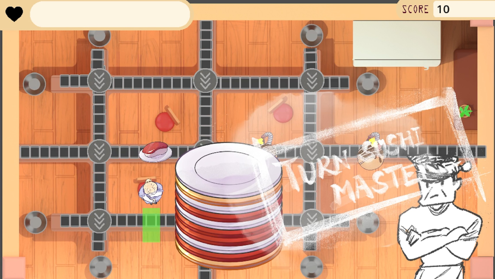
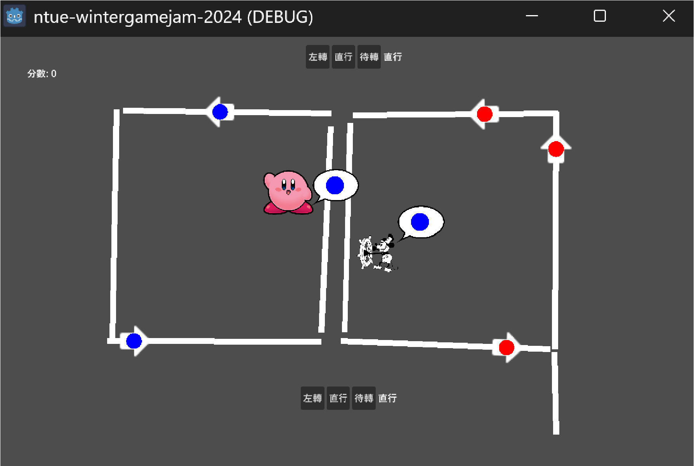
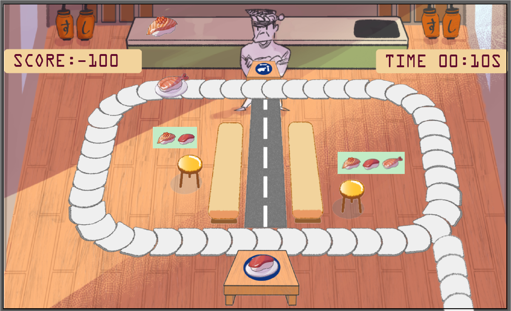
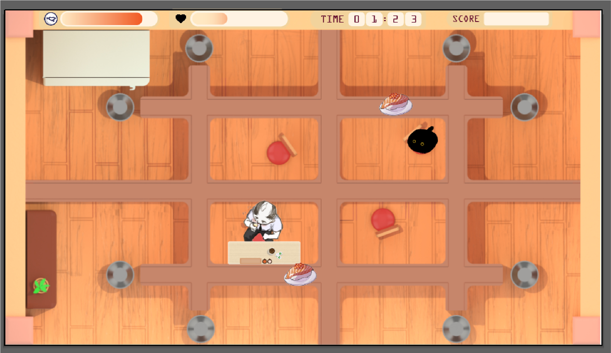
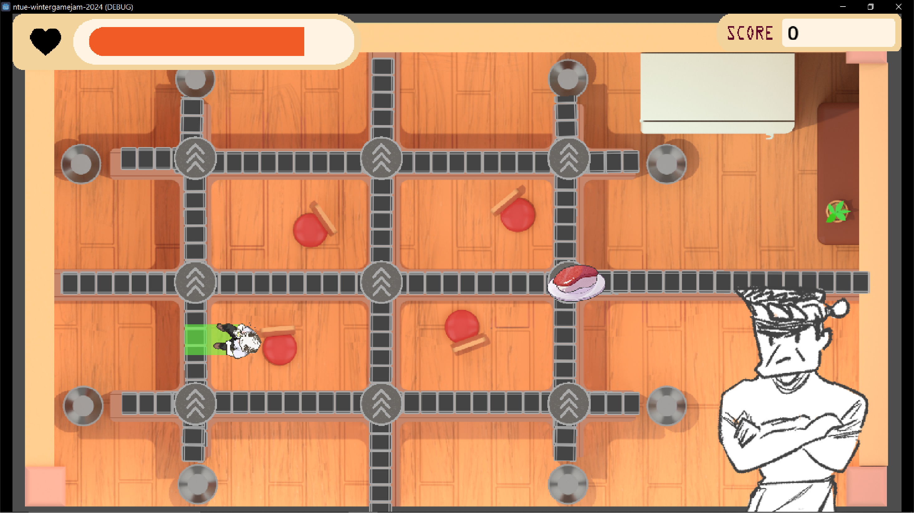
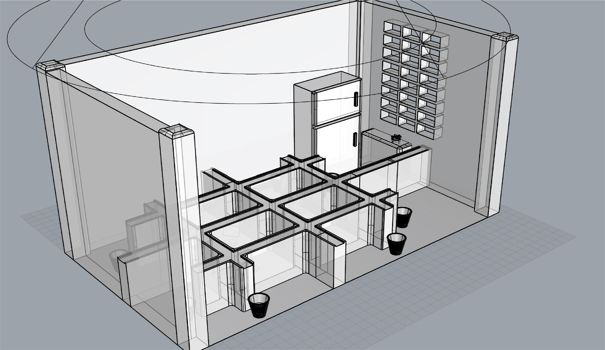
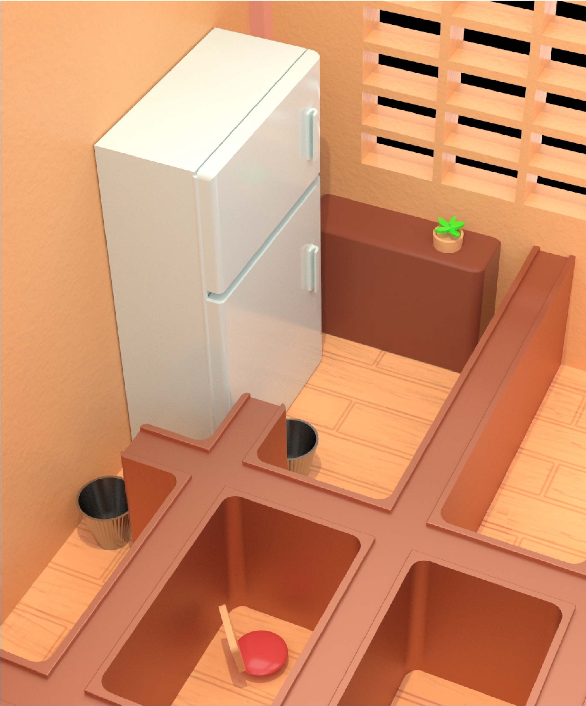
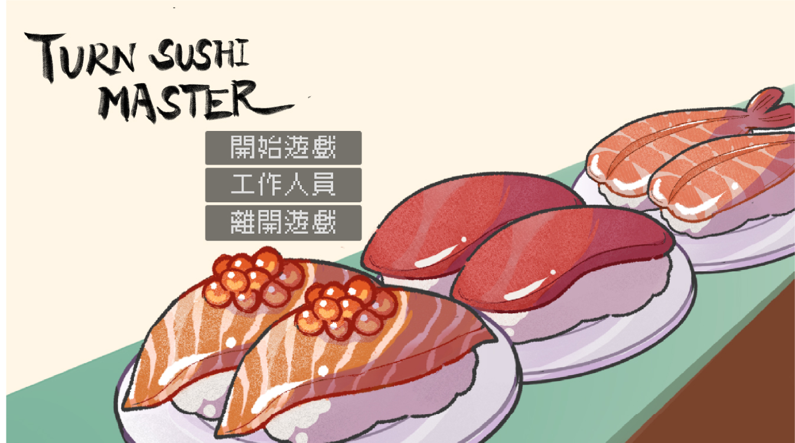

GoDOT Game · 2025

遊戲玩法：旋轉轉盤方向，在避開章魚燒炸彈的同時，將美味壽司餵給飢腸轆轆的顧客。
操作方式：使用 W/A/S/D 鍵控制轉盤方向。
專案背景：本作品開發於校園社團舉辦的 3 天 Game Jam 活動（開放校內外人士參與），由團隊共同協作打造。
主要職責：獨立負責遊戲的場景環境設計（Environment Design）與圖標資產製成（Icon Asset Creation）。
設計迭代與發想
在初期規劃階段，我協助整合團隊想法並收斂核心概念。原定以「旋轉壽司等候區」為背景，但原型測試時因程式技術限制，團隊果斷將玩法調整為 3×3 網格軌道，並引入可切換方向的中央轉盤，視角也順應由俯視改為仰視角度。
場景規劃與執行
與程式設計師確認技術可行性後，我獨立負責全遊戲場景的規劃與美術製成，包含座位區、壽司出餐檯及垃圾桶等物件擺設，確保視覺與新玩法完美契合。






美術資產創作：場景物件、UI 圖標與角色設計
